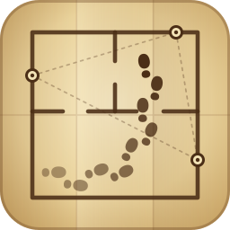

Wisp Node
WiFi Spatial Presence for Home Assistant
- Plug an ESP32-C3 or ESP32-S3 board into this computer by USB.
- Click Install and pick the board's serial port.
- When flashing ends, enter your WiFi name and password.
- Home Assistant discovers the node. Set its floor and place it on your floor plan in the Wisp integration.